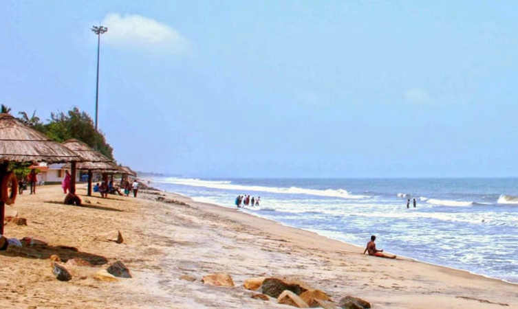
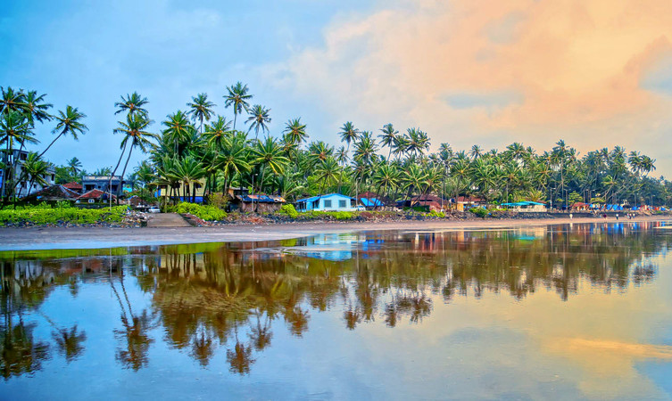

CHAVAKKAD BEACH

One of the most fascinating and unexplored beaches of the state of Kerala, the Chavakkad Beach is popularly one amongst the most famous Thrissur Tourist places. Perfect for picnickers, honeymooners, and tourists of all sorts, the golden sand of the beach is what at the tracts people from all corners of the country. The place where the beach is, there is a river that meets the sea, making an estuary. One of the best reasons for people to flock here is the colour of the waters, and the sight of fishermen going about their daily life. One can do a lot here, one of which is witnessing the amazing cleanliness of the area.
THRISSUR BEACH

Thrissur Beach is one of its kinds in the entire Kerala region which bears every charm to attract people from all walks of life. Situated on the coastline of Arabian sea, the beach offers alluring views during sunrise and sunsets.Earlier, the beach used to attract only the locals but as the time passed the beauty of the beach won hearts of the tourists even in the distant lands.The Thrissur beach is situated in the city of Thrissur which is also the cultural capital of Kerala. Besides the beach, the place is famous for the ancient temple, churches, and mosques.With people flocking around on the sunkissed golden sand bordered by swaying palm trees and the sound of the waves, the place gets charismatic as the dawn happens.People coming from all around the world to witness the natural beauty of the place indulge themselves into various activities that happen on and around the beach like swimming, surfing, fishing, sunbathing, boat rides and birdwatching on the dreamy stretch of vast blue water.Water resorts situated around provides a panoramic view of the sea along with an opulent stay option. For those who are looking for spending some quality time with the family, there are ample opportunities for all age groups such as playgrounds, garden, and waterfront parks.A lot of locals treat this place as a picnic spot on weekends.Ayurvedic massage centers offer relaxing massages with locally grown medicinal herbs. As the locals grow herbs in the area, the refreshing smell fills the surroundings and rejuvenate the people visiting the place. One can indulge themselves in various sorts of water sports such as kayaking, Catamaran sailing, scuba diving. One of the most profound experience is the fishing that one can indulge in with the help of local fishermen. To satisfy the eating urges, the place also provides options for trying out some of the authentic recipes of the south.The costermonger provides lip-smacking food options to try and attracts a lot of tourists as well as the local crowd. Plenty of resorts provide a perfect dining experience to the guests and makes the tourists feel relaxed and relish the Malayali cuisine.So to adore the natural beauty of the sea, the land, and sizzling coastline, one must visit the enchanting Thrissur beach.
VILANGAN KUNNU

The oxygen jar of the city of Thrissur, Vilangan Kunnu is a hillock located near the city. From its top, one can get a fine view of the Thrissur city and Thrissur Kole Wetlands, making the place one of the most favourite picnic spots in the region. Simply surreal, the experience from the 5-acre hilltop is only enhanced by the construction of an amusement park, where there are a number of rides that the kids can enjoy with the amazing view below.
DOLOURS BASILICA
The Dolours Basilica, or the Basilica of Our Lady of Dolours (as the full name goes), is a distinct building in the city of Thrissur. You can easily recognize this grand church from its white facade. Smack in the middle of a lush green valley, this basilica is known for narrating quite a number of stories of love and faith. Spread in an area of about 25,000 sq feet, Dolours Basilica is the third tallest church in Asia and the largest church in the country with double storeyed aisles.
THRISSUR ZOO AND STATE MUSEUM
Smack in the middle of the city is one of the most alive and beautiful of all Thrissur Tourist Places. Also known as the State Museum & Zoo, the Thrissur Zoo is located at about 2 km from the city centre, the zoo is more than just a place for showcasing the beautiful flora and fauna of the region. There is also a natural history museum and an art museum that have exhibits capturing the social and cultural heritage of Thrissur. With it being one of the two Zoological Parks in Kerala, the zoo experiences a good number of visitors every year.